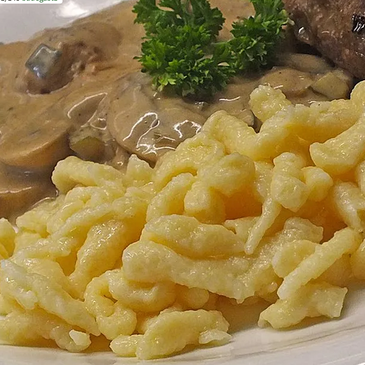
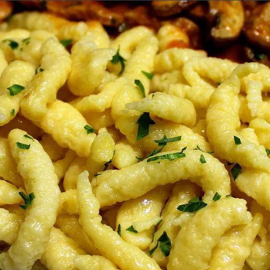

Spätzleteig



Zutaten:
(1 Portionen)
| 83,3g | Mehl |
| 1 | Ei |
| 33,3ml | Milch |
| 3,33g | Butter, geschmolzene |
| Salz |
Schritte der Anleitung:
- Das Mehl in eine größere Schüssel füllen und eine Mulde in die Mitte drücken. Die Eier, die Milch, das Salz und die geschmolzene, abgekühlte Butter hineingeben. Alles zu einem zähen, klebrigen Teig verrühren. Das geht mit einem Rührlöffel aus Holz bei entsprechender Muskelkraft oder auch mit Knethaken eines Mixers. Den Teig 5 - 10 Minuten ruhen lassen.
- In einem großen Topf Wasser zum Kochen bringen und salzen. Wer darin fit ist, kann nun die Spätzle vom Brett schaben. Ich habe einen Spätzlemacher dazu - der wird aufgesetzt und der Teig mit einem Schaber durch Löcher ins Wasser gedrückt. Dabei entstehen die kleinen kugeligen Knöpfli. Super geht das auch mit einem Spätzleschwob - den sollte man aber nicht zu sehr füllen, sonst quillt der Teig über. Hierbei entstehen lange dünne Spätzle. Man kann den Teig auch mit zwei Esslöffeln zu Nocken formen und Mehlknödel kochen.
- Wenn die Spätzle gar sind, steigen sie an die Oberfläche und können abgeschöpft werden. Das muss man bei dieser Menge immer wieder zwischendurch machen, sonst fällt der Teig auf die fertigen Spätzle im Topf und verklebt damit.
- Passt toll zu Gerichten, bei denen eine schöne Sauce entsteht und die man auf die Spätzle geben kann. Klassisch sind auch Käsespätzle mit Röstzwiebeln und zerlaufenem kräftigem Käse.
- Tipp: Der Teig ist sehr klebrig, daher spült man am besten alles gleich mit kaltem Wasser ab. In heißem Wasser verklebt der Teig noch viel mehr und lässt sich nur schwer entfernen. Wer später spült, sollte alles einweichen.